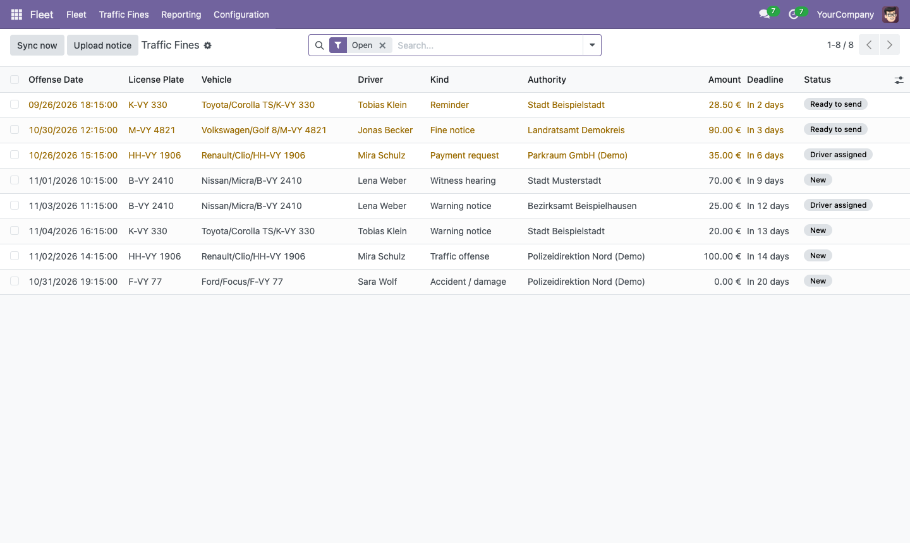
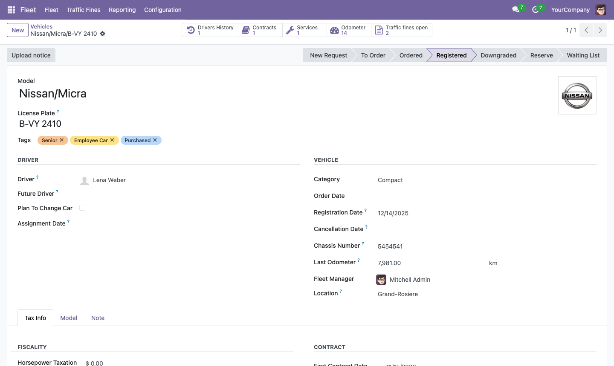
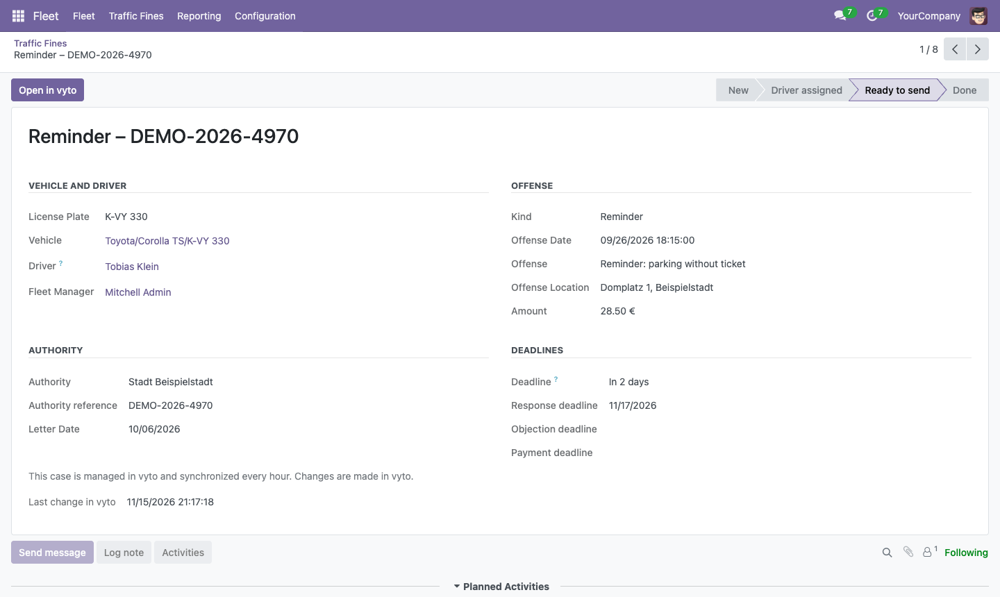
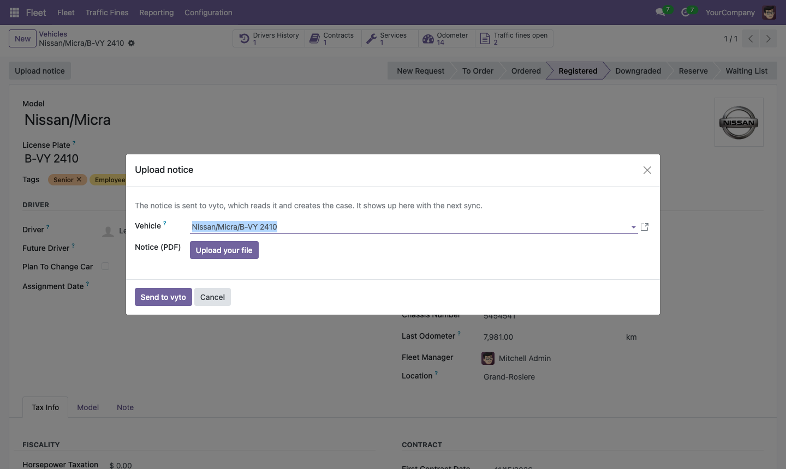
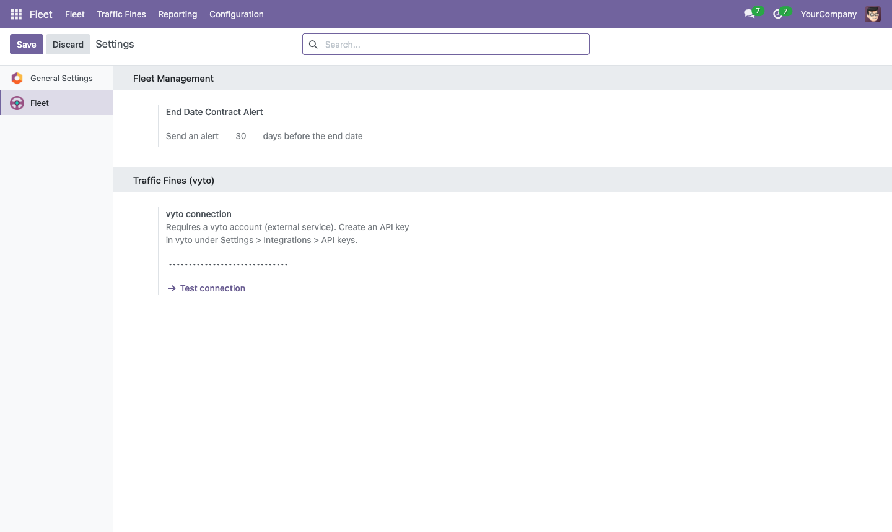

Every traffic fine of your fleet, on the vehicle and the driver it belongs to. With deadlines as activities and an upload for new notices, right inside Odoo Fleet.
Requires a vyto account (external service)

A smart button on every vehicle and driver shows their traffic fines. The vehicle is found by license plate, spaces and dashes don't matter.
The driver is taken from the vehicle's driver history on the day of the offense. If two drivers share that day, the field stays empty instead of guessing.
Each new deadline becomes one to-do for the vehicle's fleet manager. Moved deadlines replace the old to-do, closed cases remove it.
Send a PDF notice to vyto from the vehicle or the menu. vyto reads it and the case appears in Odoo with the next sync. The same file is never sent twice.
Open cases, deadline within 7 days, fines without a vehicle. Group by status, vehicle, driver or kind of notice.
Cases sync every hour and stay read-only in Odoo. Driver identification, the answer to the authority and payment are handled in vyto.
Smart button "Traffic fines open" and an "Upload notice" button for fleet managers.

Kind of notice, authority, offense, amount and all deadlines, with a link to the case in vyto.



Questions or a demo account: support@vyto.ai